건축설비기사 (2015-09-19 기출문제)
1과목: 건축일반
1. 단독주택의 실(室)의 계획에 대한 내용으로 옳지 않은 것은?
- 실의 사용상 특징에 의하여 유사한 기능의 실은 하나의 집단(group)으로 배치하는 분배를 한다.
- 거실은 주거의 중심에 두고 응접실과 객실은 현관에서 최대한 멀리 배치한다.
- 침실, 서재, 노인실은 조용한 곳에 두며 작업실은 부출입구 가까이에 집중시킨다.
- 부엌, 욕실, 화장실, 세면실, 세탁실 등 일련의 작업실들은 작업의 연결 관계를 고려하여 배치한다.
(정답률: 92%)

2. 다음 중 결로방지대책과 가장 관계가 먼 것은?
- 적절한 난방
- 적절한 방음
- 적절한 환기
- 적절한 단열
(정답률: 95%)
3. 잔향시간이란 음원으로부터 발생되는 소리가 정지했을 때 음압레벨이 몇 dB 감쇠하는 데 소요되는 시간인가?
- 40dB
- 55dB
- 60dB
- 70dB
(정답률: 94%)
4. 자연환기(통풍)에 관련된 설명으로 옳지 않은 것은?
- 환기란 실내공기질 유지의 목적이 강하며, 통풍이란 실내발생열을 제거하는 의미가 강하다.
- 야간에 창을 개방하여 외기를 도입함으로써 건물의 축열부하를 제거하고 구체를 냉각하는 것을 나이트 퍼지(night purge)라고 한다.
- 연돌효과 또는 굴뚝효과(stack effect)에 의한 환기는 겨울철보다 여름철에 더 활발하게 발생한다.
- 통풍을 발생시키는 근원은 바람에 의해 건물에 가해지는 풍압력이며, 외벽에 가해지는 압력과 실내압력의 차가 크면 클수록 환기량은 많아진다.
(정답률: 86%)
5. 병원건축의 형식 중 평면분산식으로 각 건물은 3층이하의 저층건물이며 외래부, 부속진료시설, 병동을 각각 별동으로 하여 분산시키고 복도로 연결하는 형식은?
- 엘보 엑세스(elbow access)
- 분관식(pavilion type)
- 집중식(block type)
- 애리나형(arena type)
(정답률: 93%)
6. 지붕트러스 구조에서 여러 부재를 접합하기 위하여 대는 판을 무엇이라 하는가?
- 거셋플레이트
- 베이스플레이트
- 윙플레이트
- 스티프너
(정답률: 65%)
7. 진동 및 방진대책에 관한 설명으로 옳지 않은 것은?
- 방진고무는 압축용보다 인장용으로 사용하면 더욱 효과적이다.
- 진동차단은 가능한 한 진동원에 가까운 위치에서 감쇠시키는 것이 효과적이다.
- 고체 전파음의 속도는 공기음보다 훨씬 빠르고 멀리까지 전해진다.
- 낮은 진동수의 기계류 방진에는 금속 스프링이나 고무재료가 효과적이다.
(정답률: 86%)
8. 다음 중 창호 철물에 있어서 장부가 구멍에 들어 끼어돌게 된 철물은?
- 도어 체크(Door check)
- 도어 스톱(Door stop)
- 문버팀 쇠(Door stay)
- 지도리(Pivot)
(정답률: 78%)
9. 오피스 랜드스케이프(office landscape)의 장점이 아닌 것은?
- 공간을 절약할 수 있다.
- 변화하는 작업의 패턴에 따라 조절이 가능하며 신속하고 경제적으로 대처할 수 있다.
- 소음이 발생하지 않아 집중작업이 가능하다.
- 커뮤니케이션의 융통성이 있고, 장애요인이 거의 없다.
(정답률: 93%)
10. 주택의 현관에 관한 설명으로 옳지 않은 것은?
- 전통주택에 없던 공간이나 현대화되면서 새롭게 도입된 것이다.
- 건물의 모서리에 위치하는 것이 동선처리에 유리하다.
- 대지의 형태 및 방위는 물론, 도로 위치에 따라 특성이 결정된다.
- 주택의 규모, 가족 수, 방문객 수 등을 고려하여 크기가 결정된다.
(정답률: 89%)
11. 주거공간 계획의 결정요소로서 가장 거리가 먼 것은?
- 신체적인 욕구고려
- 미래지향적인 생활 패턴 추구
- 사용자의 경제성 고려
- 전통성의 재현
(정답률: 88%)
12. 구조물의 주요부분을 지지점에서 달아매어 인장응력이 주응력이 되는 응력상태로 꾸미는 구조형식은?
- 현수구조
- 조적식구조
- 철근콘크리트구조
- 입체트러스구조
(정답률: 81%)
13. 주택의 동선에 대한 설명으로 옳지 않은 것은?
- 동선이 가지는 요소는 빈도, 속도, 하중이다.
- 동선은 일상생활의 움직임을 표시하는 선이다.
- 개인권, 사회권, 가사노동권의 3개 동선이 서로 분리되어야 한다.
- 가사노동의 동선은 가능한 북쪽에 오도록 하고 길게 처리한다.
(정답률: 92%)
14. 척도조정(Modular Coordination)에 관한 설명으로 옳지 않은 것은?
- 건축 구성재의 대량생산과 생산비용을 낮출 수 있는 이점이 있다.
- 모듈은 등차, 등비수열을 복합시킬 경우 건축용으로 우수하다.
- M.C화에서 우리나라의 지역성을 기본적으로 고려할 필요는 없다.
- 국제적인 M.C를 사용하면 건축 구성재의 국제교역이 용이해진다.
(정답률: 89%)
15. 철골보와 철근콘크리트 바닥판의 일체화를 위해 사용되는 것은?
- 앵커볼트
- 스터드볼트
- 행거볼트
- 주걱볼트
(정답률: 74%)
16. 다음 중 건식구조와 가장 거리가 먼 공법은?
- 슬립 폼(slip form) 공법
- 대형 패널(panel) 공법
- 조립식 커튼월(curtain wall) 공법
- 틸트 업(tilt up) 공법
(정답률: 80%)
17. 병원의 건축계획에 대한 내용으로 옳지 않은 것은?
- 1개소의 간호원 대기소에서 관리할 수 있는 병상수는 30 ~ 40개 이하로 한다.
- 간호원 보행거리는 40m 이내로 한다.
- 병실의 창면적은 바닥면적의 1/3 ~ 1/4, 창대의 높이는 90cm 이내로 한다.
- 병실 출입구는 침대가 통과할 수 있는 폭이어야 한다.
(정답률: 80%)
18. 목구조에 사용되는 가새에 대한 설명으로 옳지 않은 것은?
- 주요 건물에는 한 방향 가새만으로 부족할 때가 있다.
- 가새는 횡력에 대한 보강재이다.
- 가새의 경사는 45°에 가까울수록 좋다.
- 가새는 불안정한 구조인 세모구조를 안정한 구조인 네모구조로 만들기 위해 사용된다.
(정답률: 74%)
19. 학교 교실의 음 환경에 관한 설명으로 옳지 않은 것은?
- 교실과 복도의 접촉면이 큰 평면이 소음을 막는 데 유리하다.
- 소리를 잘 듣기 위해서는 적당한 잔향시간이 필요하다.
- 운동장에서의 소음은 배치계획으로 이를 방지할 수 있다.
- 소음이 70폰 이하가 되도록 한다.
(정답률: 83%)
20. 천장의 채광 효과를 얻기 위하여 천창의 위치에 설치하고, 비막이에 좋은 측창의 구조적 장점을 살리기 위하여 연직에 가까운 방향으로 한 창에 의한 채광법으로 주광률 분포의 균일성이 요구되는 곳에 사용되는 것은?
- 측광
- 정광
- 정측광
- 산란광
(정답률: 70%)
2과목: 위생설비
21. 통기관에 관한 설명으로 옳은 것은?
- 결합통기관은 2개의 통기관을 서로 연결하는 통기관이다.
- 공용통기관은 통기관과 배수관의 역할을 겸용하고 있는 관이다.
- 도피통기관은 배수수평지관의 최상류에서 분기하여 통기지관에 연결한다.
- 통기수직관의 상부는 관경의 축소 없이 단독으로 대기 중에 개구하거나 신정통기관에 접속한다.
(정답률: 52%)
22. 급탕방식 중 중앙식 급탕법에 관한 설명으로 옳은 것은?
- 배관 및 기기로부터의 열손실이 적다.
- 급탕개소마다 가열기의 설치 스페이스가 필요하다.
- 시공 후 기구증설에 따른 배관변경공사를 하기어렵다.
- 간접가열식의 경우 급탕배관의 길이가 짧고 탕을 순환할 필요가 없는 소규모 급탕설비에 주로 이용된다.
(정답률: 75%)
23. 사이펀 볼텍스식 대변기에 관한 설명으로 옳지 않은 것은?
- 탱크와 변기를 일체형으로 할 수 있다.
- 공기의 혼입이 많아 세정 시 소음이 크다.
- 진공브레이커는 역류 방지를 위해 설치된다.
- 세정수의 와류작용과 함께 사이펀 작용을 발생시켜 오물을 배출한다.
(정답률: 45%)
24. 다음 중 간접배수로 하여야 하는 것은?
- 세면기
- 대변기
- 식기세정기
- 청소용 싱크
(정답률: 86%)
25. 수도직결방식 급수설비에서 수도본관에서 1층에 설치된 샤워기까지의 높이가 2m 이고, 마찰손실압력이 20kPa, 수도본관의 수압이 150kPa 인 경우 샤워기 입구에서의 수압은?(오류 신고가 접수된 문제입니다. 반드시 정답과 해설을 확인하시기 바랍니다.)
- 약 110kPa
- 약 130kPa
- 약 150kPa
- 약 170kPa
(정답률: 24%)
26. 아파트의 경우, 스프링클러설비 수원의 저수량 산정에 사용되는 스프링클러헤드의 최대 기준 개수는? (단, 폐쇄형스프링클러헤드를 사용하는 경우)
- 10개
- 15개
- 20개
- 30개
(정답률: 48%)
27. 상수를 일단 지하 저수탱크에 저수시킨 다음 급수가 압펌프로 옥상 등에 설치된 탱크로 송수하여 중력으로 필요한 곳에 급수하는 방식은?
- 수도직결방식
- 압력탱크방식
- 고가탱크방식
- 펌프직송방식
(정답률: 73%)
28. 청소구에 관한 설명으로 옳지 않은 것은?
- 배수수직관 최하부 부근에 설치한다.
- 배수수평지관 및 배수수평주관의 기점에 설치한다.
- 배수관경이 125mm이면 직경이 125mm인 청소구를 설치한다.
- 배수의 흐름과 반대 또는 직각방향으로 열 수 있도록 설치한다.
(정답률: 76%)
29. 다음은 옥외소화전설비에 관한 설명이다. ( )안에 알맞은 것은?
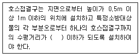
- 20m
- 25m
- 30m
- 40m
(정답률: 78%)
30. 기구 통기관의 관경은 최소 얼마 이상으로 하여야 하는가?
- DN25
- DN32
- DN40
- DN50
(정답률: 75%)
31. 배관 내 유체의 흐름을 일정한 방향으로만 흐르게 하고 역류를 방지하는데 사용되는 밸브는?
- 체크밸브
- 감압밸브
- 슬루스밸브
- 글로브밸브
(정답률: 86%)
32. 급탕설비의 안전장치에 관한 설명으로 옳지 않은 것은?
- 팽창관의 배수는 간접배수로 한다.
- 팽창관의 도중에는 체크밸브를 설치하여 개폐를 원활하게 한다.
- 팽창관은 보일러, 저탕조 등 밀폐 가열장치 내의 압력 상승을 도피시키는 역할을 한다.
- 안전밸브는 가열장치 내의 압력이 설정압력을 넘는 경우에 압력을 도피시키기 위해 온수를 방출하는 밸브이다.
(정답률: 82%)
33. BOD 제거율의 산출 공식으로 옳은 것은?
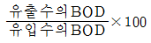
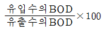
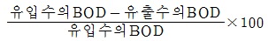
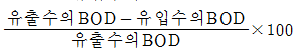
(정답률: 91%)
34. 원심식 펌프로 회전차 주위에 디퓨저인 안내 날개를 가지고 있는 펌프는?
- 터빈펌프
- 기어펌프
- 피스톤펌프
- 볼류트펌프
(정답률: 86%)
35. 배관설비에 사용되는 신축 이음쇠에 속하지 않는 것은?
- 루프형
- 슬리브형
- 벨로즈형
- 플랜지형
(정답률: 81%)
36. 급탕순환펌프에 관한 설명으로 옳지 않은 것은?
- 펌프는 내식성, 내열성 구조가 요구된다.
- 펌프의 기동, 정지는 감압밸브에 의해 자동적으로 이루어진다.
- 소규모 건축에서는 배관 도중에 설치하는 라인 펌프(line pump)가 많이 사용된다.
- 양정을 과대하게 설정하면 과대한 유량이 배관내를 순환하게 되고 부식의 원인이 된다.
(정답률: 75%)
37. 급수배관에 관한 설명으로 옳지 않은 것은?
- 수직배관에는 체크밸브를 설치하지 않는다.
- 수평배관에서 물이 고일 수 있는 부분에는 퇴수밸브를 설치한다.
- 하향 급수배관 방식의 경우 수평배관은 진행방향에 따라 내려가는 기울기로 한다.
- 상향 급수배관 방식의 경우 수평배관은 진행방향에 따라 올라가는 기울기로 한다.
(정답률: 77%)
38. 다음의 가스계량기 설치에 관한 설명 중 ( )안에 알맞은 내용은?
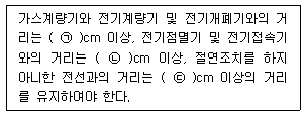
- ㉠ 15, ㉡ 30, ㉢ 60
- ㉠ 60, ㉡ 30, ㉢ 15
- ㉠ 10, ㉡ 20, ㉢ 40
- ㉠ 40, ㉡ 20, ㉢ 10
(정답률: 87%)
39. 지름 150mm, 길이 320m인 원형관에 매초 60L의 물이 흐를 때, 관내의 마찰손실수두는? (단, 관마찰계수 f = 0.03 이다.)
- 약 3.4m
- 약 10.2m
- 약 37.7m
- 약 40.8m
(정답률: 59%)
40. 다음 중 워터해머가 발생할 우려가 있는 지점으로 볼 수 없는 곳은?
- 물탱크 등에 설치된 볼탭
- 급폐쇄형 수도꼭지 사용개소
- 펌프 토출측에 설치된 채크밸브 하단
- 급수배관 계통의 전자밸브, 모터밸브 등 급폐형 밸브 설치 개소
(정답률: 59%)
3과목: 공기조화설비
41. 배기량보다 급기량을 크게 하여야 하는 실은?
- 주방
- 욕실
- 화장실
- 보일러실
(정답률: 78%)
42. 공기조화방식 중 유인유닛방식에 관한 설명으로 옳지 않은 것은?
- 각 유닛마다 수배관을 해야 하므로 누수의 염려가 있다.
- 고속덕트를 사용하므로 덕트 스페이스를 작게 할 수 있다.
- 각 유닛마다 조절할 수 있으므로 각 실의 온도 조절이 가능하다.
- 중앙공조기는 1차, 2차 공기를 처리해야 하므로 규모가 커야 한다.
(정답률: 59%)
43. 건구온도 22℃의 공기 500m3를 30℃로 가열하기 위해 필요한 열량은? (단, 공기의 비열은 1.0kJ/kg∙K, 밀도는 1.2kg/m3 로 가정한다.)
- 4200 kJ
- 4500 kJ
- 4800 kJ
- 5100 kJ
(정답률: 75%)
44. 다음의 가습방법 중 열수분비가 가장 큰 것은?
- 증기 가습
- 온수 가습
- 단열 가습
- 순환수 가습
(정답률: 73%)
45. 다음 중 대형 백화점의 공기조화 방식으로 가장 적합한 것은?
- 각층유닛방식
- 유인유닛방식
- 이중덕트방식
- 팬코일유닛방식
(정답률: 66%)
46. 대향류형 열교환기에 물의 입출구 온도가 각각 5℃, 10℃이고, 공기의 입출구 온도가 각각 28℃, 14℃일 경우 대수 평균 온도차(MTD)는 약 얼마인가?
- 3.3℃
- 5.0℃
- 9.0℃
- 13.0℃
(정답률: 46%)
47. 증기난방에 관한 설명으로 옳은 것은?
- 온수난방에 비하여 열용량이 커 예열시간이 길게 소요된다.
- 온수난방에 비하여 부하변동에 따른 방열량 조절이 곤란하다.
- 온수난방에 비하여 한랭지에서 운전정지 중에 동결의 위험이 크다.
- 온수난방에 비하여 소요방열면적과 배관경이 크게 되므로 설비비가 높다.
(정답률: 66%)
48. 노통연관 보일러에 관한 설명으로 옳지 않은 것은?
- 분할반입이 용이하다.
- 증기 및 온수용이 있다.
- 수처리가 비교적 간단하다.
- 부하변동에 안정성이 있다.
(정답률: 57%)
49. 다음의 온열지표 중 기온과 습도만에 의한 온열감을 나타낸 것은?
- 불쾌지수
- 유효온도
- 작용온도
- 신유효온도
(정답률: 72%)
50. 다음 중 증기와 응축수 사이의 온도차를 이용하는 온도조절식 증기트랩에 속하는 것은?
- 드럼 트랩
- 버킷 트랩
- 벨로즈 트랩
- 플로트 트랩
(정답률: 66%)
51. 응축수의 드레인 배관이 필요 없는 곳은?
- 재열기
- 팬코일 유닛
- 패키지 공조기
- 에어 핸들링 유닛
(정답률: 72%)
52. 다음 중 배관 내에 물이 흐를 때 생기는 마찰손실의 크기와 가장 관계가 먼 것은?
- 물의 유속
- 배관의 길이
- 배관의 직경
- 시스템 내의 압력
(정답률: 86%)
53. 고속덕트에 관한 설명으로 옳지 않은 것은?
- 소음이 크므로 취출구에 소음상자를 설치한다.
- 관마찰저항을 줄이기 위하여 일반적으로 단면을 원형으로 한다.
- 공장이나 창고 등과 같이 소음이 별로 문제가 되지 않는 곳에 사용된다.
- 설치 스페이스를 많이 차지하므로 고층빌딩 등과 같은 곳에서는 사용할 수 없다.
(정답률: 84%)
54. 스머징(Smudging)을 가장 올바르게 설명한 것은?
- 취출기류의 충돌로 인한 편류현상
- SMACNA공법에 의한 덕트 조립법
- 덕트의 점검이나 조정을 위한 점검구
- 취출구 주위면이 검게 더러워지는 현상
(정답률: 72%)
55. 덕트의 도중에 재열기와 같은 코일을 넣을 경우 코일 입구쪽의 연결부 경사는 최대 얼마 이하로 하는가?
- 15°
- 30°
- 45°
- 60°
(정답률: 59%)
56. 취출기류의 속도분포와 관련하여 4단계의 영역으로 구분할 경우, 제1영역에 관한 설명으로 옳은 것은?
- 일명 천이구역이라고도 한다.
- 취출거리의 대부분을 차지하며, 취출구의 종류에 따라 특성이 현저하다.
- 취출구에서 분출되는 공기는 아주 짧은 거리에서 속도의 변화가 없다.
- 취출기류의 속도가 급격히 감소되며 혼합된 공기까지도 주위로 확산되는 영역이다.
(정답률: 55%)
57. 히트펌프에 관한 설명으로 옳지 않은 것은?
- 1대의 기기로 냉방과 난방을 겸용할 수 있다.
- 냉동사이클에서 응축기의 방열을 난방에 이용한다.
- 냉동기의 성적계수는 히트펌프의 성적계수보다 1만큼 크다.
- 히트펌프의 성적계수를 향상시키기 위해 지열 등을 이용할 수 있다.
(정답률: 75%)
58. 500명을 수용하는 극장에서 1인당 이산화탄소 배출량이 20L/h일 때, 이산화탄소 농도가 0.⑤%인 외기를 도입하여 실내의 이산화탄소 농도를 0.1%로 유지하는데 필요한 환기량은?
- 15,000m3/h
- 20,000m3/h
- 25,000m3/h
- 30,000m3/h
(정답률: 72%)
59. 2개 이상의 엘보를 사용하여 이음부의 나사 회전을 이용해서 배관의 신축을 흡수하는 신축이음쇠는?
- 루프형
- 벨로즈형
- 슬리브형
- 스위블형
(정답률: 83%)
60. 다음의 공기조화방식 중 에너지 절약측면에서 가장 불리한 것은?
- 단일덕트방식
- 각층유닛방식
- 유인유닛방식
- 이중덕트방식
(정답률: 68%)
4과목: 소방 및 전기설비
61. 어떤 전열기가 10분 동안에 600,000[J]의 일을 했다고 한다. 이 전열기에서 소비한 전력은?
- 500[W]
- 1,000[W]
- 1,500[W]
- 3,000[W]
(정답률: 68%)
62. 실효값이 220[V]인 교류전압의 최대값은?
- 약 245[V]
- 약 275[V]
- 약 311[V]
- 약 325[V]
(정답률: 65%)
63. 다음의 자동제어 방식 중 각종 연산제어 및 에너지 절약제어가 가능하며 정밀도 및 신뢰도가 가장 높은 것은?
- 전기식
- 전자식
- 공기식
- DDC 방식
(정답률: 88%)
64. 작업구역에는 전용의 국부조명방식으로 조명하고, 기타 주변 환경에 대하여는 간접조명과 같은 낮은 조도레벨로 조명하는 방식은?
- TAL조명방식
- 건축화조명방식
- 반직접조명방식
- 전반확산조명방식
(정답률: 66%)
65. 4[H]의 코일에 5[A]의 직류전류가 흐를 때 코일에 축적되는 에너지는?
- 10[J]
- 20[J]
- 50[J]
- 100[J]
(정답률: 53%)
66. 누전차단기에서 검출기구로 사용되는 것은?
- 계전기
- 콘덴서
- 영상변류기
- 유입차단기
(정답률: 68%)
67. 다음 설명에 알맞은 직류 전동기의 종류는?
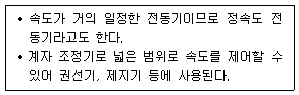
- 분권전동기
- 3상 유도전동기
- 단상 유도전동기
- 세이딩 코일형 전동기
(정답률: 63%)
68. 알칼리축전지에 관한 설명으로 옳지 않은 것은?
- 저온특성이 좋다.
- 공칭전압은 2[V/셀]이다.
- 극판의 기계적 강도가 강하다.
- 부식성의 가스가 발생하지 않는다.
(정답률: 69%)
69. 다음 중“옴(ohm)의 법칙”을 바르게 표현한 식은? (단, 전압=V, 전류=I, 저항=R, 정전용량=C)
- V=IR
- I=VR
- R=CV
- C=IR
(정답률: 83%)
70. 전기식 자동제어시스템에서 사용되는 압력검출소자에 속하지 않은 것은?
- 벨로즈
- 브르돈관
- 다이어프램
- 나일론 리본
(정답률: 70%)
71. 어떤 저항에 100[V]의 전압을 가하여 10[A]의 전류가 흘렀다. 95[V]의 전압을 가하면 몇 [A]의 전류가 흐르는가?
- 5.5[A]
- 9.5[A]
- 12.5[A]
- 14.5[A]
(정답률: 83%)
72. 다음 중 변전실 면적에 영향을 주는 요소로 볼 수 없는 것은?
- 발전기 용량
- 건축물의 구조적 여건
- 수전전압 및 수전방식
- 설치 기기와 큐비클의 종류와 시방
(정답률: 57%)
73. 다음 설명에 알맞은 광원의 종류는?
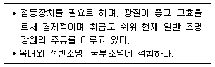
- 형광램프
- 블랙라이트램프
- 저압나트륨램프
- 고압나트륨램프
(정답률: 73%)
74. 수전방식 중 스폿 네트워크 방식의 특징으로 옳지 않은 것은?
- 저가의 시설
- 무정전 공급이 가능
- 전압 변동률이 감소
- 부하 증가에 대한 적응성 향상
(정답률: 65%)
75. 변압기의 병렬운전조건으로 옳지 않은 것은?
- 권선비가 같을 것
- 1차, 2차 정격전압 및 극성이 같을 것
- 3상에서는 상회전 방향 및 위상 변위가 같을 것
- 순환전류와 부하 전류치의 합이 정격부하의 110% 를 넘을 것
(정답률: 74%)
76. 접지의 종류 중 기능상 목적이 같은 접지들끼리 전기적으로 연결한 접지는?
- 개별접지
- 공통접지
- 독립접지
- 종별접지
(정답률: 73%)
77. 콘센트아웃렛에 관한 설명으로 옳지 않은 것은?
- 일반용의 콘센트아웃렛은 15A 정격을 사용한다.
- 물 사용 장소에서는 일반적으로 바닥에 설치한다.
- 벽에 설치하는 경우 일반적으로 바닥 위 30cm 정도의 높이에 설치한다.
- 전원이 빠지면 중대한 문제가 발생하는 경우는 걸림형 콘센트아웃렛을 사용한다.
(정답률: 76%)
78. 다음 중 피드백 제어방식의 제어동작에 의한 분류에 속하지 않는 것은?
- 비례동작
- 적분동작
- 정치동작
- 다위치동작
(정답률: 69%)
79. 전압과 전류의 위상차 θ가 있는 경우, 교류 전력 중 유효전력을 나타낸 것은?
- VI[W]
- VI[VA]
- VIcosθ[W]
- VIsinθ[VAR]
(정답률: 67%)
80. 전선에 흐르는 전류가 누설되지 않으려면 다음 중 어떤 값이 커야 되는가?
- 도체저항
- 접촉저항
- 접지저항
- 절연저항
(정답률: 80%)
5과목: 건축설비관계법규
81. 에너지를 대량으로 소비하는 건축물로서 가스∙급수∙배수설비를 설치하는 경우 건축기계설비 기술사 또는 공조냉동기계기술사의 협력을 받아야 하는 대상 건축물에 속하지 않는 것은? (단, 해당 용도에 사용되는 바닥면적의 합계가 2,000m2인 건축물)
- 기숙사
- 판매시설
- 의료시설
- 숙박시설
(정답률: 67%)
82. 문화 및 집회시설 중 공연장의 개별관람석의 바닥면적이 400m2 인 경우, 이 개별 관람석에 설치하여야 하는 출구의 유효너비 합계는 최소 얼마 이상으로 하여야 하는가?(오류 신고가 접수된 문제입니다. 반드시 정답과 해설을 확인하시기 바랍니다.)
- 1.5m
- 1.8m
- 2.4m
- 3.0m
(정답률: 26%)
83. 건축법령상 다음과 같이 정의되는 용어는?
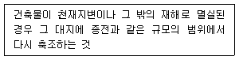
- 증축
- 재축
- 개축
- 대수선
(정답률: 81%)
84. 다음과 같은 조건에 있는 문화 및 집회시설 중 관람장에 설치하여야 하는 승용승강기의 최소 대수는?
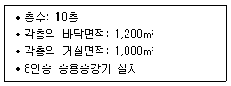
- 2대
- 3대
- 4대
- 5대
(정답률: 55%)
85. 건축법령상 방송 공동수신설비를 설치하여야 하는 대상 건축물에 속하는 것은? (단, 바닥면적의 합계가 3000m2인 건축물의 경우)
- 업무시설
- 숙박시설
- 공동주택
- 단독주택
(정답률: 73%)
86. 건축물에 설치하는 지하층의 구조 및 설비에 관한 기준 내용으로 옳지 않은 것은?
- 거실의 바닥면적의 합계가 1,000m2 이상인 층에는 환기설비를 설치할 것
- 지하층의 바닥면적이 300m2 이상인 층에는 식수 공급을 위한 급수전을 1개소 이상 설치할 것
- 거실의 바닥면적이 30m2 이상인 층에는 직통계단 외에 피난층 또는 지상으로 통하는 비상탈출구 및 환기통을 설치할 것
- 바닥면적이 1,000m2 이상인 층에는 피난층 또는 지상으로 통하는 직통계단을 방화구획으로 구획되는 각 부분마다 1개소 이상 설치할 것
(정답률: 64%)
87. 6층 이상인 건축물로서 건축물의 거실에 국토교통부령으로 정하는 기준에 따라 배연설비를 설치하여야 하는 대상 건축물에 속하지 않는 것은? (단, 피난층이 아닌 경우)
- 종교시설
- 운수시설
- 의료시설
- 공동주택
(정답률: 65%)
88. 다음은 건축물의 에너지절약설계기준에 따른 용어의 정의이다. ( )안에 알맞은 것은?
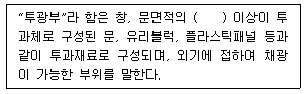
- 50%
- 60%
- 70%
- 80%
(정답률: 64%)
89. 연면적 200m2를 초과하는 건축물에 설치하는 계단에 관한 기준 내용으로 옳은 것은?
- 계단을 대체하여 설치하는 경사로는 경사도가 1 : 6을 넘지 아니할 것
- 높이가 0.8m를 넘는 계단 및 계단참의 양옆에는 난간을 설치할 것
- 너비가 3m를 넘는 계단에는 계단의 중간에 너비 4m 이내마다 난간을 설치할 것
- 높이가 3m를 넘는 계단에는 높이 3m 이내마다 유효 너비 1.2m 이상의 계단참을 설치할 것
(정답률: 71%)
90. 건축법령상 제1종 근린생활시설에 속하지 않는 것은?
- 세탁소
- 한의원
- 마을회관
- 일반음식점
(정답률: 74%)
91. 다음은 특정소방대상물의 소방시설 설치의 면제 기준에 관한 내용이다. ( )안에 알맞은 설비는?
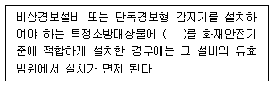
- 비상방송설비
- 자동화재탐지설비
- 자동화재속보설비
- 무선통신보조설비
(정답률: 78%)
92. 다음 중 건축법의 적용을 받는 건축물은?
- 도시가스배관시설
- 고속도로 통행료 징수시설
- 문화재보호법에 따른 가지정 문화재
- 철도나 궤도의 선로 부지에 있는 플랫폼
(정답률: 67%)
93. 다음은 건축설비 설치의 원칙에 관한 기준 내용이다. ( )안에 알맞은 것은?
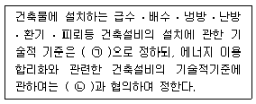
- ㉠ 국토교통부령, ㉡ 산업통상자원부장관
- ㉠ 국토교통부령, ㉡ 미래창조과학부장관
- ㉠ 산업통상자원부령, ㉡ 국토교통부장관
- ㉠ 산업통상자원부령, ㉡ 미래창조과학부장관
(정답률: 82%)
94. 다음 중 옥외소화전설비를 설치하여야 하는 특정소방대상물에 속하지 않는 것은? (단, 지상 1층 및 2층의 바닥면적의 합계가 9,000m2인 경우)
- 아파트등
- 판매시설
- 종교시설
- 문화 및 집회시설
(정답률: 62%)
95. 방염성능기준 이상의 실내장식물 등을 설치하여야 하는 특정소방대상물에 속하지 않는 것은?
- 숙박시설
- 옥내 수영장
- 의료시설 중 종합병원
- 방송통신시설 중 방송국
(정답률: 82%)
96. 건축법령상 초고층 건축물의 정의로 옳은 것은?
- 층수가 50층 이상이거나 높이가 150m 이상인 건축물
- 층수가 50층 이상이거나 높이가 200m 이상인 건축물
- 층수가 60층 이상이거나 높이가 180m 이상인 건축물
- 층수가 60층 이상이거나 높이가 240m 이상인 건축물
(정답률: 80%)
97. 상업지역 및 주거지역에서 건축물에 설치하는 냉방 시설 및 환기시설의 배기구는 도로면으로부터 최소 얼마 이상의 높이에 설치하여야 하는가?
- 1m
- 1.5m
- 1.8m
- 2m
(정답률: 79%)
98. 다음의 소방시설 중 피난설비에 속하지 않는 것은?
- 완강기
- 인공소생기
- 객석유도등
- 시각경보기
(정답률: 60%)
99. 축냉식 전기냉방설비의 설계기준 내용으로 옳지 않은 것은?
- 열교환기는 시간당 최소냉방열량을 처리할 수 있는 용량 이상으로 설치하여야 한다.
- 자동제어설비는 축냉운전, 방냉운전 또는 냉동기와 축열조를 동시에 이용하여 냉방운전이 가능한 기능을 갖추어야 한다.
- 축열조는 보온을 철저히 하여 열손실과 결로를 방지해야 하며, 맨홀 등 점검을 위한 부분은 해체와 조립이 용이하도록 하여야 한다.
- 부분축냉방식의 경우에는 냉동기가 축냉운전과 방냉운전 또는 냉동기와 축열조의 동시운전이 반복적으로 수행하는 데 아무런 지장이 없어야 한다.
(정답률: 68%)
100. 다음 중 바닥 부분에 국토교통부령으로 정하는 기준에 따라 방습을 위한 조치를 하여야 하는 대상에 속하지 않는 것은?
- 제1종 근린생활시설 중 공중화장실
- 제1종 근린생활시설 중 목욕장의 욕실
- 제1종 근린생활시설 중 제과점의 조리장
- 건축물의 최하층에 있는 거실(바닥이 목조인 경우)
(정답률: 52%)